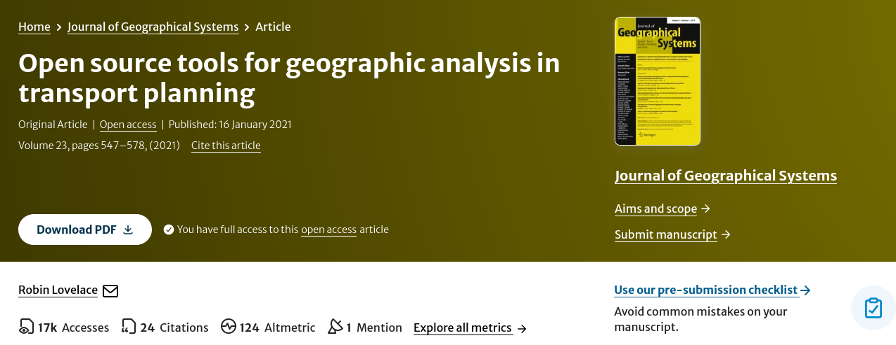

Introduction to transport data science
Module: Transport Data Science
2026-02-06
Why take Transport Data Science
- New skills (cutting edge R and/or Python packages)
- Potential for impacts
- Allows you to do new things with data
- It might get you a job!



Live demo: npt.scot web app

What is science?
- Scientific knowledge is hypotheses that can be falsified
- Science is the process of generating falsifiable hypotheses and testing them
- In a reproducible way
- Systematically

- Falsifiability is central to the scientific process (Popper 1959)
- All of which requires software conducive to reproducibility

User support
Getting help is vital for leaning/improving software

“10-Hour Service Pack $2,000” (source: caliper.com/tcprice.htm)
Best way to get support is peer-to-peer:

Source: https://community.rstudio.com/about
R vs Python
- Lots of debate on this topic - see https://blog.usejournal.com/python-vs-and-r-for-data-science-833b48ccc91d
How to decide?
- If priority: getting things done quick (with support from me ;) go with R
- If you already know Python and are 100% confident you can generate reproducible results, go with that
- If you want to be avant-garde and try something else like Julia, do it (as long as it’s reproducible)

Gamification

- Completely open source, written in rust
- Source: video at https://github.com/dabreegster/abstreet/#ab-street